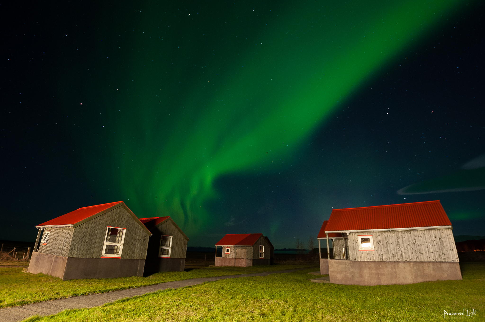

Полярное сияние
Материал из Википедии — свободной энциклопедии
Запрос «Северное сияние» перенаправляется сюда; см. также другие
значения.
Запрос «Aurora Borealis» перенаправляется сюда; см. также другие
значения.
Полярное сияние, северное сияние (Aurora Borealis), южное сияние (Aurora Australis), аврора (Aurora), устар. «па́зори»[1][2] — свечение (люминесценция) верхних слоёв атмосфер планет, обладающих магнитосферой, вследствие их взаимодействия с заряженными частицами солнечного ветра.

Содержание
Природа явления
В очень ограниченном участке верхней атмосферы сияния могут быть вызваны низкоэнергичными заряженными частицами солнечного ветра, попадающими в полярную ионосферу через северный и южный полярные каспы [3]. В северном полушарии каспенные сияния можно наблюдать над Шпицбергеном в околополуденные часы.
При столкновении энергичных частиц плазменного слоя с верхней атмосферой происходит возбуждение атомов и молекул газов , входящих в её состав. Излучение возбуждённых атомов в видимом диапазоне и наблюдается как полярное сияние. Спектры полярных сияний зависят от состава атмосфер планет: так, например, если для Земли наиболее яркими являются линии излучения возбуждённых атомов кислорода и азота в видимом диапазоне, то для Юпитера — линии излучения водорода в ультрафиолете.

Поскольку ионизация заряженными частицами происходит наиболее эффективно в конце пути частицы и плотность атмосферы падает с увеличением высоты в соответствии с барометрической формулой, то высота появлений полярных сияний достаточно сильно зависит от параметров атмосферы планеты, так, для Земли с её достаточно сложным составом атмосферы красное свечение кислорода наблюдается на высотах 200—400 км, а совместное свечение азота и кислорода — на высоте ~110 км. Кроме того, эти факторы обусловливают и форму полярных сияний — размытая верхняя и достаточно резкая нижняя границы.

Полярные сияния наблюдаются преимущественно в высоких широтах обоих полушарий в овальных зонах-поясах, окружающих магнитные полюса Земли — авроральных овалах. Диаметр авроральных овалов составляет ~ 3000 км во время спокойного Солнца, на дневной стороне граница зоны отстоит от магнитного полюса на 10—16°, на ночной — 20—23°. Поскольку магнитные полюса Земли отстоят от географических на ~12°, полярные сияния наблюдаются в широтах 67—70°, однако во времена солнечной активности авроральный овал расширяется и полярные сияния могут наблюдаться в более низких широтах — на 20—25° южнее или севернее границ их обычного проявления. Например, на острове Стюарт, лежащем лишь на 47° параллели, сияния происходят регулярно. Маори даже назвали его «Пылающие небеса».
В спектре полярных сияний Земли наиболее интенсивно излучение основных компонентов атмосферы — азота и кислорода; при этом наблюдаются их линии излучения как в атомарном, так и молекулярном (нейтральные молекулы и молекулярные ионы) состоянии. Самыми интенсивными являются линии излучения атомарного кислорода и ионизированных молекул азота.
Свечение кислорода обусловлено излучением возбуждённых атомов в метастабильных состояниях с длинами волн 557,7 нм (зелёная линия, время жизни 0,74 с) и дублетом 630 и 636,4 нм (красная область, время жизни 110 с). Вследствие этого красный дублет излучается на высотах 150—400 км, где из-за высокой разрежённости атмосферы низка скорость гашения возбуждённых состояний при столкновениях. Ионизированные молекулы азота излучают на длинах волн 391,4 нм (ближний ультрафиолет), 427,8 нм (фиолетовый) и 522,8 нм (зелёный). Однако каждое явление обладает своей неповторимой гаммой в силу непостоянства химического состава атмосферы и погодных факторов.

Спектр полярных сияний меняется с высотой. В зависимости от преобладающих в спектре полярного сияния линий излучения полярные сияния делятся на два типа: высотные полярные сияния типа A с преобладанием атомарных линий и полярные сияния типа B на относительно небольших высотах (80—90 км) с преобладанием молекулярных линий в спектре вследствие столкновительного гашения атомарных возбуждённых состояний в сравнительно плотной атмосфере на этих высотах.
Полярные сияния весной и осенью возникают заметно чаще, чем зимой и летом. Пик частотности приходится на периоды, ближайшие к весеннему и осеннему равноденствиям. Во время полярного сияния за короткое время выделяется огромное количество энергии. Так, за одно из зарегистрированных в 2007 году возмущений выделилось 5⋅1014 джоулей, примерно столько же, сколько во время землетрясения магнитудой 5,5.
При наблюдении с поверхности Земли полярное сияние проявляется в виде общего быстро меняющегося свечения неба или движущихся лучей, полос, корон, «занавесей». Длительность полярных сияний составляет от десятков минут до нескольких суток.
Считалось, что полярные сияния в северном и южном полушарии являются симметричными. Однако одновременное наблюдение полярного сияния в мае 2001 года из космоса со стороны северного и южного полюсов показало, что северное и южное сияния существенно отличаются друг от друга [4].
В 2016 году был обнаружен новый вид полярных сияний — фиолетового цвета. Они были названы Стив (STEVE — сокр. Strong Thermal Emission Velocity Enhancement)[5].

Полярные сияния на других планетах
Хотя Венера и не имеет достаточно сильного магнитного поля, на ней наблюдаются явления, аналогичные полярным сияниям, которые появляются в виде светлых и диффузных пятен различной формы и интенсивности, иногда затрагивающие весь планетарный диск. Сияния на Венере образуются путём соударений электронов солнечного ветра и атмосферы планеты, и особенно хорошо видны на ночной стороне атмосферы.
Полярные сияния также были обнаружены и на Марсе, 14 августа 2004 года, инструментом SPICAM на борту Mars Express. Оно находилось в районе Киммерийской земли (англ.)русск. (52° ю. ш. 177° в. д.). Общий размер излучающей области составлял около 30 км в поперечнике и примерно 8 км в высоту[6]. Анализируя карту разломов коры, скомпилированную из данных космического аппарата Mars Global Surveyor , учёные заметили, что области выбросов соответствуют району, где локализовано магнитное поле. Это указывает на то, что обнаруженное световое излучение было потоком электронов, движущихся вдоль силовых линий магнитного поля в верхние слои атмосферы Марса.
Магнитные поля планет-гигантов Солнечной системы значительно сильнее магнитного поля Земли, что обусловливает больший масштаб полярных сияний этих планет по сравнению с полярными сияниями Земли. Так, высочайшим в Солнечной системе (1200 км) является северное сияние Сатурна[7][8]. Особенностью наблюдений с Земли (и вообще из внутренних областей Солнечной системы) планет-гигантов является то, что они обращены наблюдателю освещённой Солнцем стороной и в видимом диапазоне их полярные сияния теряются в отражённом солнечном свете. Однако благодаря высокому содержанию водорода в их атмосферах, излучению ионизированного водорода в ультрафиолетовом диапазоне и малому альбедо планет-гигантов в ультрафиолете, с помощью внеатмосферных телескопов (космический телескоп «Хаббл») получены достаточно чёткие изображения полярных сияний этих планет.

Особенностью Юпитера является влияние его спутников на полярные сияния: в областях «проекций» пучков силовых линий магнитного поля на авроральный овал Юпитера наблюдаются яркие области полярного сияния, возбуждённые токами, вызванными движением спутников в его магнитосфере и выбросом ионизированного материала спутниками — последнее особенно сказывается в случае Ио с её вулканизмом.

На изображении полярного сияния Юпитера, сделанного космическим телескопом «Хаббл» заметны такие проекции: Ио (пятно с «хвостом» вдоль левого лимба), Ганимеда (в центре) и Европы (чуть ниже и справа от следа Ганимеда).
В культуре
- «Вечернее размышление о Божием величестве при случае великого северного сияния» — ода Михаила Ломоносова, написанная в 1743 году.
- «Радиоволна», художественный фильм 2000 г., США
- «Белый плен», художественный фильм 2006 г., США
- «Белая мгла», художественный фильм 2009 г., США
- На альбоме «North From Here» (1993 года) финской Sentenced есть песня Norhen lights (Северное сияние)
- Описание русских народных названий основных проявлений полярного сияния даны в романе-эпопее П. И. Мельникова-Печерского «В лесах»:
Пазори — северное сияние. Слово «северное сияние» народ не знает. Это слово деланное, искусственное, придуманное в кабинете, едва ли не Ломоносовым, а ему, как холмогорцу, не могло быть чуждым настоящее русское слово «пазори». Северное сияние — буквальный перевод немецкого Nordlicht. У нас каждый переход столь обычного на Руси небесного явления означается особым метким словом. Так начало пазорей, когда на северной стороне неба начинает как бы разливаться бледный белый свет, подобный Млечному Пути, зовется отбелью или белью. Следующий затем переход, когда отбель, сначала принимая розовый оттенок, потом постепенно багровеет, называется зорями (зори, зорники). После зорей начинают обыкновенно раскидываться по небу млечные полосы. Это называют лучами. Если явление продолжается, лучи багровеют и постепенно превращаются в яркие, красные и других цветов радуги столбы. Эти столбы краснеют более и более, что называется багрецы наливаются. Столбы сходятся и расходятся — об этом говорится: столбы играют. Когда сильно играющие столбы сопровождаются перекатным треском и как бы громом — это называется сполохами . Если во время северного сияния зори или столбы мерцают, то есть делаются то светлей, то бледней, тогда говорится: «зори или столбы дышат». Наши лесники, равно как и поморы, обращающиеся с компасом, давным-давно знают, что «на пазорях матка дурит», то есть магнитная стрелка делает уклонения. Случается, что небо заволочено тучами, стоит непогодь, либо метель метет, и вдруг «матка задурит». Лесники тогда знают, что на небе пазори заиграли, но за тучами их не видать. Замечательно, что как у поморов, так и у лесников нет поверья, будто северное сияние предвещает войну или мор. Свойство магнитной стрелки и влияние на нее северного сияния они называют «тайной Божьей силой».
- В том же романе Мельникова-Печёрского «В лесах» приводится народное поверье, что играющие на па́зорях багровые столбы являются не чем иным, как видимым проявлением молитв, возносимых к Богу неведомыми праведниками («праведная молитва огненными столбами в небо ходит»).
См. также
Примечания
- Виноградов В. В. Пазори, северное сияние. // История слов. — М., 1994. — С. 119.
- Мосеев И. И. Поморьска говоря: краткий словарь поморского языка. — Архангельск: Правда Севера, Белые альвы, 2005. — С. 92. — ISBN 5-7619-0243-5.
- Полярные каспы — воронкообразные области в магнитосфере, возникающие в приполярных областях, на геомагнитных широтах ~ 75°, при взаимодействии солнечного ветра с магнитным полем Земли. Через каспы частицы солнечного ветра проникают в ионосферу, вызывая её нагрев и полярные сияния. На Северном полюсе Земли нашли загадочный феномен // Лента. Ру, 29 ноября 2019
- Aurorae are not mirror images (англ.) // Astronomy. — 2009. — Vol. 37, iss. 11. — P. 20.
- Garner, Rob. Mystery of Purple Lights in Sky Solved With Citizen Scientists' Help (англ.), NASA (14 March 2018). Дата обращения 19 марта 2018.
- Mars Express discovers aurorae on Mars. ESA (9 июня 2005). Дата обращения: 19 марта 2015. Архивировано 19 марта 2015 года.
- Northern Aurora in Motion (недоступная ссылка). NASA. Дата обращения: 19 марта 2015. Архивировано19 марта 2015 года.
- Checking in on Saturn, п.30
Литература
- Александров Н. Л. Полярные сияния // Соросовский образовательный журнал, 2001, № 5, с. 75-79;
- Булат В. Л. Оптические явления в природе. // М., Просвещение, 1974, 143 с;
- Мишин Е. В., Рушин Ю. Я., Телегин В. А. Взаимодействие электронных потоков с ионосферной плазмой. // Л., Гидрометеоиздат, 1989, 264 с.
- Исаев С. И. Полярные сияния. // Мурманск, Книж. изд-во, 1980, 141 с.;
- Мизун Ю. Г. Полярные сияния. // М., Наука, 1983, 136 с.;
- Зверева С. В. В мире солнечного света. — Л.: Гидрометеоиздат, 1988. — 160 с.
- Stern, David P. A Brief History of Magnetospheric Physics During the Space Age (англ.) // Reviews of Geophysics : journal. — 1996. — Vol. 34, no. 1. — P. 1—31. — doi: 10.1029/95rg03508. — Bibcode: 1996RvGeo..34....1S.
- Stern, David P.; Peredo, MauricioThe Exploration of the Earth's Magnetosphere. phy6.org.
- Eather, Robert H. Majestic Lights: The Aurora in Science, History, and The Arts (англ.). — Washington, DC: American Geophysical Union, 1980. — ISBN 978-0-87590-215-9
- Akasofu, Syun-Ichi. Secrets of the Aurora Borealis (англ.) // Alaska Geographic Series. — 2002. — April (vol. 29, no. 1).
- Daglis, Ioannis; Akasofu, Syun-Ichi. Aurora – The magnificent northern lights // Recorder. — 2004. — November (vol. 29, no. 9). — P. 45—48. Архивировано 24 мая 2015 года.
- Savage, Candace Sherk.Aurora: The Mysterious Northern Lights. — San Francisco: Sierra Club Books / Firefly Books, 1994. — ISBN 978-0-87156-419-1.
- Hultqvist, Bengt.The Aurora // Handbook of the Solar-Terrestrial Environment (англ.) / =Kamide, Y.; Chian, A.. — Berlin Heidelberg: Springer-Verlag, 2007. — P. 331—354. — ISBN 978-3-540-46314-6. — doi:10.1007/0-306-47969-9_3.
- Phillips, Tony 'tis the Season for Auroras. NASA (21 октября 2001). Дата обращения: 15 мая 2006.Архивировано 11 апреля 2006 года.
- Northern Lights Gallery
- Chisholm, Hugh, ed. (1911), Aurora Polaris, Encyclopædia Britannica, vol. 2 (11th ed.), Cambridge University Press, pp. 927–93
Ссылки
- Полярные сияния в средних широтах (Беларусь)
- Над Индийским океаном произошло северное сияние
- В.ПСАЛОМЩИКОВ Небесные сполохи и загадки Земли
- Фёдор Юрчихин. Наш дом — Земля (2). Полярные сияния. Федеральное космическое агентство. — Фотографии лётчика-космонавта России Фёдора Юрчихина во время полёта 25-й экспедиции на МКС. Дата обращения: 9 ноября 2010.
- Northern Lights Gallery
- Astronomy Picture of the Day. Aurora Over Norway (20 сентября 2010). Дата обращения: 16 февраля 2014.